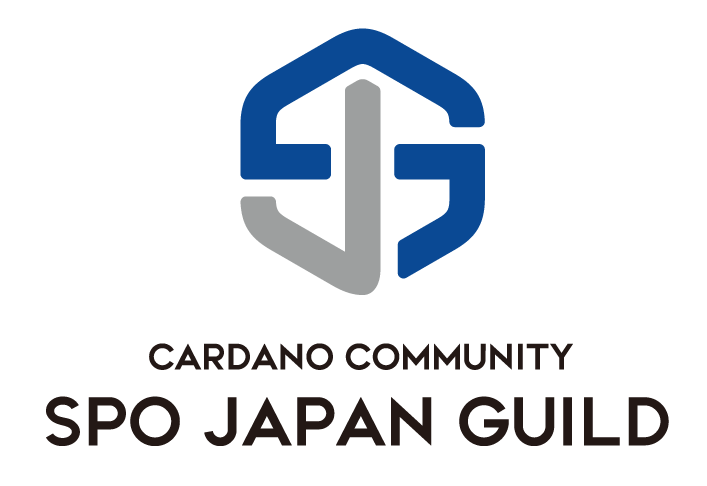

CIEL Stake Pool
農家の運営するプール
CIEL Stake Poolへようこそ
CIEL Stake Poolは第３世代のブロックチェーンである「Cardano」の分散型台帳を支えるステーキングプールです。お持ちのADA（エイダ）をステーキングすることで、当プールがブロックを生成した際にステーキング報酬を受け取ることができます。
これまでの歩み
当プールは、サステナビリティを目指す現役農家の Yoshiki が運営しております。
Cardanoは、アフリカをはじめとした新興国で「トレーサビリティ」に利用されています。
トレーサビリティとは、農産物を生産地から消費地までのルートや生産者情報を記憶し追跡可能にする技術です。この技術を利用することで、農産物が流通する過程での生産者への信頼と、消費地及び消費量の把握、新たな消費者の確保を容易にすることができます。農業と深い関わりのある次世代の技術に興味を持ち、学びを深めたいという思いで"CIEL Stake Pool"が立ち上がりました。


Pool

安全性と信頼性の追求
高性能クラウドサーバー(4 vCPU 16GB of RAM and 320GB SSD)を使用し、監視システム(Grafana＆Prometheus)を24時間365日稼働させることで、万が一サーバーの異常をいち早く検知し復旧時間を最小限にするなど保守的な運用を心がけております。

運営実績
CIEL StakePoolには確実な運営実績があります。
サステナビリティ
運営者に入る報酬の一部を慈善団体に寄付することで、Cardanoが地球の持続可能性に利用されるユースケースを作ります。